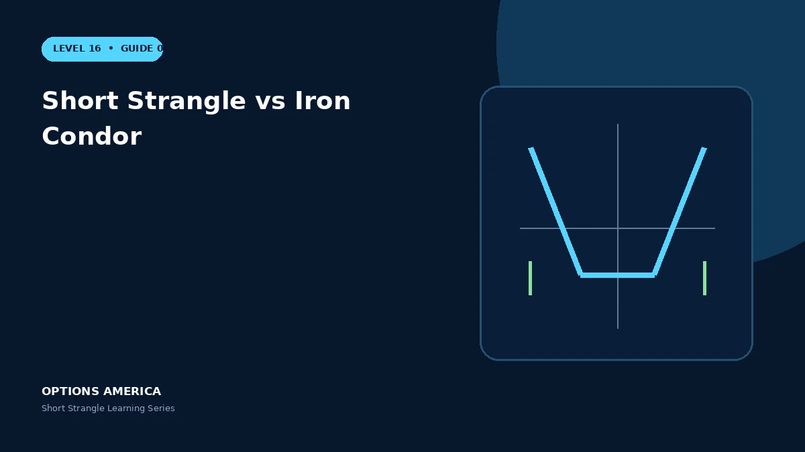

Compare an uncovered short strangle with a wing-protected iron condor across credit, loss, margin and flexibility.
Structure
Both sell an OTM put and call. The iron condor also buys a lower put and higher call, creating two vertical credit spreads.
Credit and loss
The strangle collects more because it buys no protection, but losses remain open. The condor's net credit is lower and maximum loss is limited by wing width.
Buying power
Strangle margin can expand with price and IV. A condor generally has a clearer requirement based on its defined maximum loss, although broker treatment varies.
Management
The strangle can be easier to roll with fewer legs, while the condor limits disaster risk. Liquidity, commissions and fill quality matter in either structure.
A practical example
A 90/110 strangle collects $4. Buying the 85 put and 115 call for $1 converts it to a five-point iron condor with a $3 credit and $2 maximum loss per share.
This simplified scenario focuses on selected outcomes; live prices and risks will differ. Live option prices also reflect the underlying price, time decay, rates, dividends, liquidity and transaction costs. Greeks are theoretical estimates, not guarantees.
Build a risk-first trading plan
Before using short strangle vs iron condor, record the stock price, put and call strikes, expiration, total credit and contract multiplier. Calculate both breakevens, then estimate dollar loss beyond them under upside and downside gaps. A wide strike range improves the starting room but does not define either tail.
Stress several prices, time points and volatility levels, including a skew change that affects the put and call differently. Review delta, gamma, theta, vega and buying power for the complete portfolio. Multiple OTM positions can become tested together during a common market shock.
Define a profit target, maximum tolerated loss, tested-side trigger, margin reserve and latest exit date before entry. Decide whether an event is intentionally included and how assignment would be handled. Use multi-leg orders and confirm quantities after every fill, roll or partial close.
Document the result after exit, including slippage, assignment effects and the largest intraday exposure. Comparing the original forecast with the actual path helps distinguish a sound process from a lucky outcome and improves later strike, duration, margin-reserve and position-size choices under similar market conditions.
Frequently asked questions
Which has defined risk?
The iron condor.
Which collects more credit?
Normally the short strangle.
Do wings remove all execution risk?
No.
Continue the Short Strangle cluster
Explore related guides: Short Strangle vs Covered Strangle · Theta and Time Decay in a Short Strangle · Short Strangle Options Strategy: 12 Mistakes to Avoid. For a structured sequence, use the free Level 16 – Short Strangle course.
Options involve risk and are not suitable for every investor. This material is educational and is not investment, tax or legal advice. Greeks are theoretical estimates, and contract terms and broker requirements can vary.